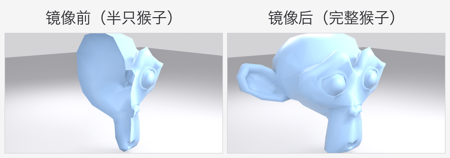
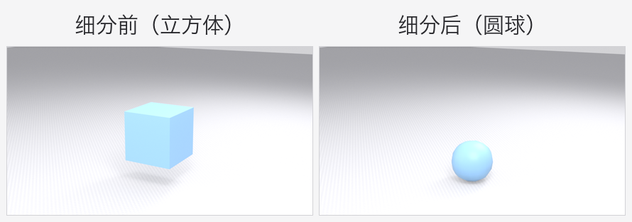
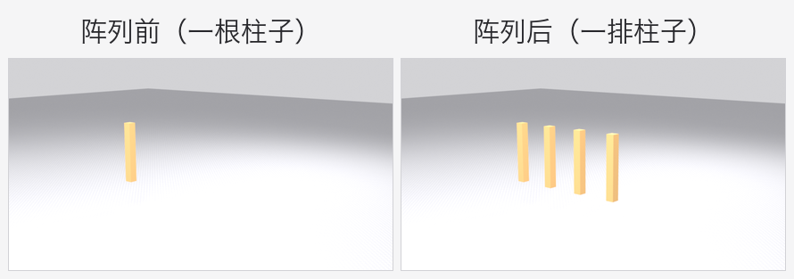
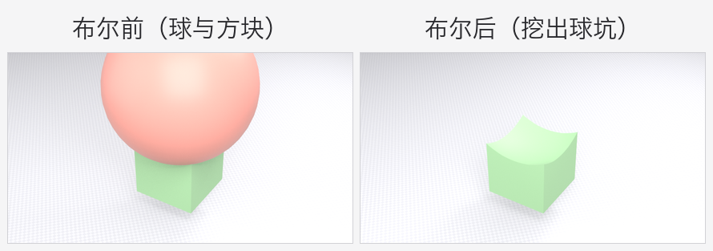
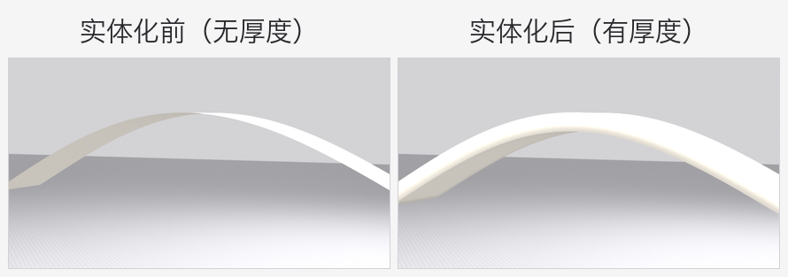
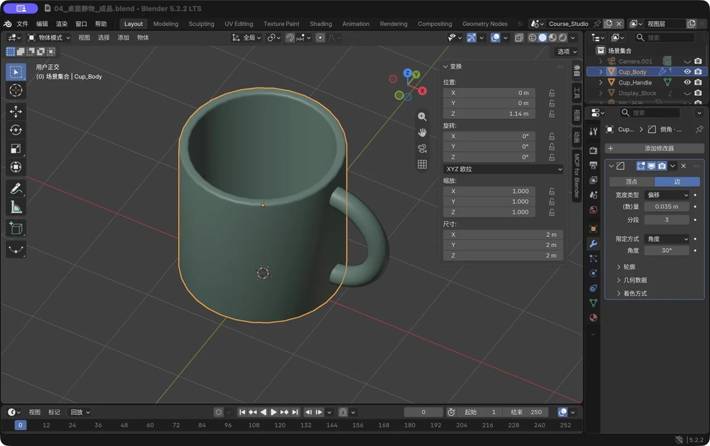

第 4 章 修改器：新手加速器
场景：你已经能手捏模型了，但有些活儿手捏太傻了——对称的、重复的、要圆润的。修改器就是 Blender 的"自动加工流水线"：你定规则，它干活。
学完你会
- 理解"修改器栈"的运作方式，知道为什么它被称为非破坏性建模；
- 会使用六种新手最常用修改器：镜像、细分曲面、阵列、布尔、实体化、倒角；
- 知道修改器该"何时应用（Apply）"。
核心概念：修改器（Modifier）是什么？
给物体添加一个修改器 = 在它身上挂一条自动加工规则。特点是：
- 非破坏性：规则实时生效（视口和渲染都认），但原始网格没有被改。不满意？随时删掉修改器，物体变回原样。
- 可叠加：一个物体可以挂一排修改器，像流水线一样按顺序加工——这就是"修改器栈"。
- 顺序敏感：同样的几个修改器，换个顺序结果可能完全不同（常见坑里细说）。
添加方式：选中物体 → 右侧属性面板的蓝色扳手图标（修改器属性）→ 添加修改器 → 选一个。神器快捷键：Ctrl+1～Ctrl+5 直接给物体挂上对应等级的"细分曲面"。
六大常用修改器
① 镜像（Mirror）：做一半，得整只
回头看看第 3 章的马克杯——手柄左右对称、杯体完全旋转对称，其实只需要做一半，让镜像修改器补出另一半。

图 30 左：只建了一半（半只猴子）；右：镜像自动补全。对称的椅子、家具、人物都靠它
【跟着做】
Shift+C把 3D 游标归零（后面的镜像要以游标为中心）；Shift+A加一个圆锥体，先 右键 → 设置原点 → 3D 游标（把物体的"旋转中心"挪到原点）；- 按
GX1Enter，把圆锥移到原点右侧； - 添加修改器 → 镜像（Mirror）。镜像轴 X 默认开启——看，左侧自动出现了对称的圆锥。
💡 镜像的逻辑是"以物体的原点为中心翻一份拷贝"。所以镜像前把物体原点放到对称轴上（通常就是世界原点），是唯一要记住的事。
② 细分曲面（Subsurf）：直角变圆润的魔法

图 31 左：立方体；右：挂上 2 级细分后的样子。低面数玩"变形金刚"就是这么来的
【跟着做】
- 新建立方体，按
Ctrl+2（挂 2 级细分），观察它"瘦身变圆"的过程； - 进编辑模式（
Tab），3切面模式，E拉伸顶面——你会发现模型像橡皮泥一样圆润地变形，这就是细分的威力； - 右键 → 平滑着色，质感更顺滑。
细分的等级（Levels）建议先停在 1～2 级：每加一级，面数 ×4。级别越高越圆，也越吃电脑性能。
③ 阵列（Array）：一根变一排

图 32 左：一根柱子；右：阵列复制成一排。栏杆、栅栏、楼梯、链条……重复元素的量产工具
【跟着做】
- 建一根细长的立方体当柱子；
- 添加修改器 → 阵列（Array）；
- 数量（Count）改成 4，把"相对偏移（Relative Offset）"的 X 改成 5——意思是"每根柱子间隔 5 个自身宽度"；
- 一排柱子出现了。
④ 布尔（Boolean）：用模型切模型

图 33 左：球与方块相交；右：差集运算后，方块表面留下一个球形凹坑
【跟着做】
- 加一个立方体（方块）和一个球体，用
GZ把球移到方块顶部、与方块相交； - 选中方块 → 添加修改器 → 布尔（Boolean）；
- 运算选差集（Difference），"物体"选那个球；
- 球消失了，方块上多了一个球形凹坑——此时球被"借用"了，别删它，直到你应用布尔的修改器（应用后定型，球就可以删了）。
布尔有四种运算：差集（挖掉）、并集（焊在一起）、交集（只留重叠部分）、切割。以后做"带孔的零件""挖窗洞的模型"全靠它。
⑤ 实体化（Solidify）：给纸片加厚度

图 34 左：单层曲面，边缘薄如纸；右：实体化后有了可见的厚度
⑥ 倒角（修改器版）：把"磨圆"变成可调参数
编辑模式里的 Ctrl+B 是"磨完定型"；挂一个倒角修改器，宽度和段数随时能改，不想要、删掉就恢复原样：
- 选中物体 → 添加修改器 → 生成 → 倒角（Bevel）；
- 宽度类型用"偏移"，数量填一个明显小于厚度的值（经验：倒角别超过最薄处的一半）；
- 段数 3 左右；限定方式选"角度"、角度 30°——只磨"比 30° 更尖"的边，平整的面不受影响；
- 反复点修改器标题栏的开关，对比硬边和圆润过渡——感受它到底改了什么。

图 35 真实软件截图：倒角修改器——偏移 0.035、3 段、限角 30°，参数随时可调
💡 顺序实验：同时挂上"实体化 + 倒角"，拖一拖它们的先后——先实体化再倒角，厚度边缘也被磨圆；先倒角再实体化，结果完全不同。这就是"顺序敏感"的活教材。
【跟着做】
- 新建一个圆柱体，进编辑模式，用
3面模式选中顶面和底面，X删除——得到一个"无盖的圆筒壳"； - 回到物体模式，添加修改器 → 实体化（Solidify），厚度设 0.05；
- 圆筒壳长出了真实壁厚，从侧面能清楚看到"边"。
视频里常见的"建模大神的模型都有厚度"——就是这个修改器。做薄壳零件（车身外壳、机箱、墙体）必备。
什么时候"应用"修改器？
修改器挂着不动，一切实时且可反悔。但以下情况需要应用（Apply）——把规则"焊死"进网格：
- 布尔：应用后可以把借用的切割物体删掉，也便于后续精细修补；
- 要导出给别的软件/游戏引擎时（部分格式会自动应用，但别赌）；
- 后续编辑必须基于最终形状时。
应用方法：修改器面板里每个修改器右上角的小箭头 → 应用（Apply）。⚠️ 应用不可逆，重要节点前先 Ctrl+Shift+S 另存新版本。
新手常见坑
| 坑 | 说明 | 对策 |
|---|---|---|
| 换顺序结果全变 | 修改器栈从上往下执行 | 顺序在列表中拖拽调整；"细分"一般放最后（除配合"倒角"的情况） |
| 镜像出来叠在一起 | 物体原点不在对称轴上 | 右键 → 设置原点 → 3D 游标（游标在原点时）再镜像 |
| 布尔后满是碎线 | 两个物体表面完全重合处的计算很脆弱 | 让物体轻微相交（别贴面），相交后再布尔 |
| 细分后模型缩水 | 细分会"内缩"是正常特性 | 加修改器时把"保持边界"等选项了解下；或接受它、按需微调 |
| 挂着修改器就删了布尔用的球 | 球被借用后即被隐藏 | 应用布尔（Apply）之后，再删球 |
| 应用按钮点了没反应 | 可能有多个用户（复制过的物体共用网格） | 面板里点"设为独立数据"或先 Ctrl+J/单独化 |
过关标准
- 六种修改器我每样都动手挂过一次，能说出"前 / 后"两张对比图差在哪；
- 我能用环形阵列做出法兰盘（6 个孔均匀分布）；
- 我给一个物体同时挂过两个修改器、拖过顺序，看出结果确实不同。
自检题
- 为什么说修改器是"非破坏性"的？举一个它的好处。
- 做一把左右对称的椅子，最少只需要建几分之几？用什么修改器补齐？
Ctrl+2的效果是什么？- 想让方块上出现 4 个均匀的螺丝孔，你会用哪两个修改器配合？（说出思路即可）
- 布尔和别的修改器相比，有什么"额外注意事项"？
答案见文末。
自检题答案
- 因为它在修改器栈里实时计算，原始网格没被改动，可以随时删除/修改规则；好处：做了一个错误操作可以一键反悔，还能反复调参数。
- 一半（甚至四分之一）；镜像（Mirror）修改器。
- 给选中物体挂一个 2 级"细分曲面"修改器。
- 思路：建一个圆柱当"孔"，用阵列复制出 4 个，再在方块上用布尔差集挖掉它们（或先阵列孔、逐个布尔）。
- 布尔的切割物体是"借用"关系——不能提前删；另外两物体表面不要完全重合，要真相交。
小结
- 修改器 = 挂在物体上的自动加工规则，非破坏、可叠加、顺序敏感。
- 六件套：镜像（对称）、细分（圆润）、阵列（重复）、布尔（切割）、实体化（厚度）、倒角（圆边）。
- 添加：属性面板蓝色扳手 → 添加修改器；
Ctrl+1~5快捷挂细分。 - 应用（Apply） 才定型；应用前先另存版本。
- 记住口诀：能挂修改器就别手捏——省时、可调、不伤原模型。